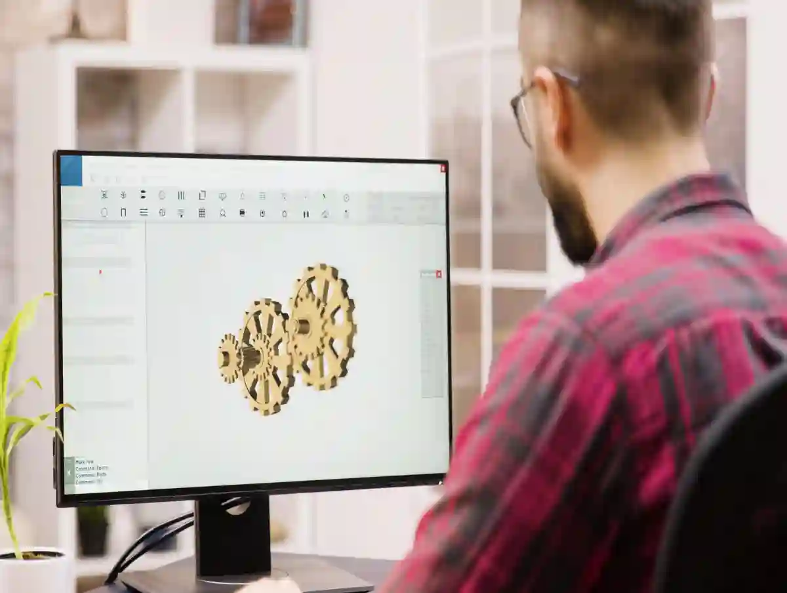
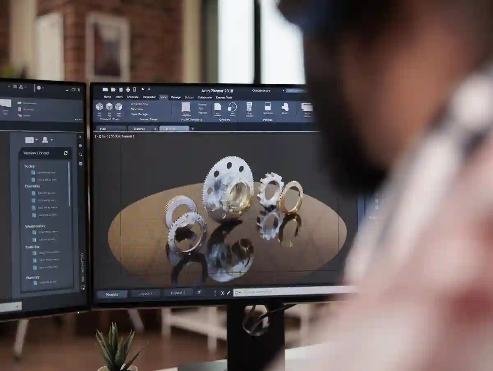

CNC İmalat Teknik Çizim Teklifi Nasıl Etkiler?
CNC imalat süreçlerinde teklifin doğruluğunu belirleyen en kritik unsur, cnc imalat teknik çizim kalitesidir. Teknik çizim yalnızca bir parça tarif aracı değildir; üretim süresi, kullanılacak takım yolları, tolerans seviyesi ve kalite kontrol gereksinimleri gibi pek çok maliyet parametresini doğrudan etkiler. Bu nedenle CNC firmaları için teknik resim, teklif sürecinin temel veri kaynağıdır.
Eksik, hatalı veya üretime uygun olmayan bir çizim; teklifin ya gereğinden düşük verilmesine ya da gereksiz maliyet kalemleriyle şişirilmesine neden olur. Her iki senaryo da üretici ve satın almacı açısından risklidir. Bu yazıda, teknik çizimin CNC teklif sürecine etkisini mühendislik perspektifiyle ele alıyoruz.
CNC İmalatta Teknik Çizimin Teklif Sürecindeki Rolü
Bir CNC teklifi hazırlanırken ilk incelenen doküman teknik resimdir. Parçanın geometrisi, ölçüleri ve toleransları, üretim stratejisinin nasıl kurulacağını belirler. Teknik çizimle CNC teklif ilişkisi bu noktada başlar.
Teknik çizimde yer alan bilgiler şunları doğrudan etkiler:
- İşleme süresi hesapları
- Kullanılacak CNC tezgâh tipi
- Bağlama ve fikstür ihtiyacı
- Ölçüm ve kalite kontrol gereksinimleri
Eğer çizim bu bilgileri net şekilde aktarmıyorsa, teklif hesapları varsayımlara dayanır. Bu durum özellikle seri üretim dışındaki özel parça imalatlarında ciddi maliyet sapmalarına yol açar.
CNC Teknik Resim Hazırlama Neden Kritik Bir Aşamadır?
CNC teknik resim hazırlama, yalnızca CAD bilgisiyle sınırlı değildir. Çizimin üretime aktarılabilir olması gerekir. Örneğin, gereksiz yere sıkı verilen toleranslar veya tanımsız yüzey pürüzlülükleri, üretici için belirsizlik yaratır.
Bu tür belirsizlikler:
- Emniyet payı eklenmiş yüksek tekliflere
- Alternatif üretim senaryolarının dışlanmasına
- Teklif süresinin uzamasına
neden olur. Özellikle satın alma ekipleri için bu durum, teklif karşılaştırmasını zorlaştırır.
Üretime uygun olmayan çizimler, teklif aşamasında “risk primi” olarak fiyatlara yansır.
Üretime Uygun Teknik Çizim Nasıl Tanımlanır?
Bir teknik çizimin üretime uygun kabul edilmesi için yalnızca ölçülerin verilmiş olması yeterli değildir. Üretime uygun teknik çizim, CNC tezgâhlarının ve talaşlı imalat proseslerinin gerçekleriyle uyumlu olmalıdır.
Bu kapsamda üretime uygun bir çizim:
- Standart tolerans sistemlerine dayanır
- Gereksiz geometrik karmaşadan kaçınır
- Ölçüm referanslarını açıkça tanımlar
Bu noktada, tolerans kavramının doğru yönetilmesi kritik önemdedir. Toleransların nasıl sınıflandırıldığı ve ölçü hassasiyetine etkisi hakkında detaylı teknik bilgi için Talaşlı İmalatta Tolerans ve Ölçü Hassasiyeti içeriği referans alınabilir.
Tolerans Seviyesi Teklif Maliyetini Nasıl Değiştirir?
Toleransların maliyete etkisi, CNC tekliflendirmede en sık göz ardı edilen konulardan biridir. ±0,01 mm toleransla işlenecek bir yüzey ile ±0,1 mm toleranslı bir yüzey arasında işleme süresi, takım seçimi ve ölçüm yöntemi tamamen farklıdır.
Daha dar toleranslar:
- Daha düşük ilerleme hızları
- Daha fazla ölçüm ve proses içi kontrol
- Daha yüksek fire riski
anlamına gelir. Bu nedenle teknik çizimde her toleransın fonksiyonel gerekçesi net olmalıdır.
Teknik Çizim Hatalarının Teklif Sürecine Etkisi
CNC parça teknik resim hataları, teklif sürecini doğrudan olumsuz etkiler. En sık karşılaşılan hatalar arasında şunlar yer alır:
- Ölçü çakışmaları
- Tanımsız referans yüzeyler
- Mantıksız tolerans kombinasyonları
Bu tür hatalar, CNC firmalarının teklif vermekten kaçınmasına veya fiyatı bilinçli olarak yükseltmesine neden olabilir. Kalite kontrol perspektifinden bakıldığında, bu risklerin üretim aşamasında nasıl yönetildiği CNC Üretimde Kalite Kontrol Süreçleri başlığı altında detaylandırılmaktadır.
Teknik Çizim ile Üretim Arasında Kopukluk Olursa Ne Olur?
Teknik çizim, üretim mühendisliğiyle uyumlu değilse teklif ile gerçek maliyet arasında ciddi farklar oluşur. Bu durum genellikle revizyon talepleri, fiyat güncellemeleri ve termin kaymalarıyla sonuçlanır.
CNC Teknik Çizim Formatları Teklif Sürecini Nasıl Etkiler?

CNC firmaları için teknik çizimin hangi formatta sunulduğu, teklif süresini ve doğruluğunu doğrudan etkiler. CNC imalat teknik çizim yalnızca içeriğiyle değil, dosya formatıyla da değerlendirilir. PDF, DXF ve STEP gibi formatlar arasında ciddi farklar bulunur.
Teklif aşamasında mühendislik ekipleri, çizimi CAM ortamına ne kadar hızlı ve hatasız aktarabildiklerine bakar. Format uyumsuzluğu, ekstra kontrol ve yeniden modelleme ihtiyacı doğurur. Bu durum doğrudan teklif maliyetine yansır.
PDF Teknik Çizimler: Okunabilir Ama Yetersiz mi?
PDF formatı, teknik çizimin görsel olarak incelenmesi için yeterlidir; ancak üretim hazırlığı açısından sınırlıdır. Ölçülerin manuel olarak CAM ortamına aktarılması gerekir. Bu durum, özellikle karmaşık geometrilerde zaman kaybına neden olur.
PDF çizimle gelen taleplerde:
- Ön değerlendirme süresi uzar
- Ölçü aktarım hatası riski artar
- Teklifte güvenlik payı eklenir
Bu nedenle yalnızca PDF sunulan projelerde teknik çizimle CNC teklif süreci genellikle daha temkinli ilerler.
DXF ve STEP Dosyalarının Teklife Katkısı
DXF ve STEP formatları, cnc teknik resim hazırlama sürecinin üretimle entegre olduğunu gösterir. Özellikle STEP dosyaları, üç boyutlu geometrinin eksiksiz aktarılmasını sağlar.
STEP dosyası bulunan projelerde:
- CAM programlama süresi kısalır
- İşleme stratejisi netleşir
- Teklif daha hızlı ve net çıkar
Bu nedenle üretime uygun teknik resim denildiğinde, yalnızca ölçü değil, doğru dosya formatı da kritik bir kriterdir.
Ölçüm ve Kalite Kontrol Gereksinimleri Teklifi Nasıl Değiştirir?
Teknik çizimde belirtilen ölçüm ve kontrol talepleri, teklif maliyetini doğrudan etkiler. Özellikle CMM ölçüm, raporlama ve izlenebilirlik gereksinimleri, fiyatlandırmada ayrı bir kalem olarak değerlendirilir.
Bu noktada toleransların maliyete etkisi bir kez daha devreye girer. Dar toleranslı parçalar yalnızca üretimde değil, ölçüm aşamasında da ek maliyet yaratır.
Kalite kontrol süreçlerinin CNC üretime etkisi hakkında detaylı teknik çerçeve için Kalite Kontrol ve Ölçüm sayfası referans alınabilir.
CMM Ölçüm Talebi Teklifte Nasıl Konumlanır?
Teknik çizimde CMM ölçüm şartı belirtilmişse, CNC firması şu unsurları hesaba katar:
- Ölçüm süresi
- Raporlama gereksinimi
- Ölçüm ekipmanı uygunluğu
Türkiye’de ölçüm izlenebilirliği ve metroloji altyapısına dair resmi teknik çerçeve, UME – Ulusal Metroloji Enstitüsü – TÜBİTAK UME kaynaklarında açıklanmaktadır.
Teknik Çizimde Belirsizlik Teklif Riskini Nasıl Artırır?
Teknik çizimde net olmayan her detay, teklif veren firma için bir risk unsurudur. Bu risk genellikle fiyatlandırmaya eklenen “belirsizlik payı” ile telafi edilir. Özellikle cnc parça teknik resim hataları içeren çizimler, tekliflerin karşılaştırılmasını anlamsız hale getirir.
Belirsizliğe yol açan yaygın durumlar:
- Referans yüzeylerin tanımlanmaması
- Fonksiyonel ölçülerin işaretlenmemesi
- Tolerans zincirlerinin eksikliği
Bu tür çizimler, üretim sürecinde revizyon ihtiyacını artırır.
Satın Alma Perspektifinden Teknik Çizim Netliği
Satın alma ekipleri için teknik çizim, teklif karşılaştırmasının temelidir. Net ve üretime uygun çizimler, farklı CNC firmalarından gelen tekliflerin aynı teknik zeminde değerlendirilmesini sağlar. Bu konu, CNC Üretimde Tolerans ve Hassasiyet Yönetimi içeriğinde üretim boyutuyla detaylandırılmaktadır.
Satın Alma Ekipleri İçin Teknik Çizim Kontrol Checklist’i

Satın alma ekipleri açısından teknik çizim, yalnızca mühendislik dokümanı değil; doğru teklif almanın temel aracıdır. CNC imalat teknik çizim kalitesi, tekliflerin karşılaştırılabilir olmasını sağlar. Bu nedenle teklif talebi öncesinde teknik çizimin belirli kriterlere göre kontrol edilmesi gerekir.
Kontrol edilmeden iletilen çizimler:
- Tekliflerin birbirinden kopuk gelmesine
- Gereksiz revizyon taleplerine
- Zaman ve maliyet kaybına
neden olur. Özellikle birden fazla CNC firmasıyla çalışılan projelerde bu kontrol hayati önemdedir.
Teknik Çizim Teklif Öncesi Kontrol Listesi
Aşağıdaki maddeler, üretime uygun teknik çizim açısından temel bir ön kontrol sağlar:
- Tüm ölçüler tanımlı mı?
- Referans yüzeyler net mi?
- Toleranslar fonksiyonel mi yoksa genel mi?
- Yüzey pürüzlülükleri belirtilmiş mi?
- Ölçüm yöntemi (CMM, mastar vb.) belirtiliyor mu?
Bu maddelerden biri bile eksikse, teknik çizimle CNC teklif süreci sağlıklı ilerlemez.
Gerçek Üretim Örnekleriyle Teklif Sapmaları
Sahadaki üretim deneyimi, teknik çizimin teklif üzerindeki etkisini net biçimde ortaya koyar. Aynı parçaya ait iki farklı teknik çizim üzerinden gelen teklifler arasında %20–30 maliyet farkı oluşması nadir değildir.
Bu farkın temel nedeni çoğunlukla toleransların maliyete etkisinin doğru tanımlanmamış olmasıdır. Gereksiz dar toleranslar, üretim süresini ve ölçüm maliyetini artırır. Bu durumun üretim tarafındaki teknik karşılığı, Talaşlı İmalatta Tolerans ve Ölçü Hassasiyeti içeriğinde detaylı olarak açıklanmaktadır.
Aynı Parça, Farklı Çizim = Farklı Teklif
Gerçek bir üretim senaryosunda:
- Çizim A: Genel toleranslı, referansları net
- Çizim B: Tüm ölçülerde dar toleranslı
olduğunda, Çizim B için verilen teklif hem daha yüksek hem de termin süresi daha uzundur. Bunun nedeni CNC tezgâh ayarları, takım aşınması ve ölçüm tekrarlarının artmasıdır.
Bu noktada cnc parça teknik resim hataları, doğrudan fiyat farkına dönüşür.
CNC Firmaları Teknik Çizime Bakarken Neleri Fiyatlar?
CNC firmaları teknik çizimi yalnızca “yapılabilir mi?” sorusuyla değerlendirmez. Aynı zamanda risk, süre ve kalite gereksinimlerini fiyatlandırır. CNC imalat teknik çizim, bu üç başlığı doğrudan etkiler.
Fiyatlandırmada dikkate alınan temel unsurlar:
- İşleme zorluğu
- Tolerans seviyesi
- Ölçüm ve raporlama gereksinimi
Bu nedenle teknik çizimi ne kadar net ve üretime uygun sunarsanız, teklif de o kadar rekabetçi olur.
Üretim Mühendisliği Bakış Açısı
Üretim mühendisleri, çizimde tanımlanmayan her detayı “varsayım” olarak ele alır. Varsayım arttıkça teklif de yukarı yönlü revize edilir. Bu durum özellikle seri dışı ve özel parça imalatlarında sık görülür. Bu sürecin kalite kontrol boyutu, CNC Üretimde Kalite Kontrol Süreçleri içeriğiyle doğrudan ilişkilidir.
Teknik Çizim Revizyonları Teklif Sürecini Nasıl Yavaşlatır?
Teklif alındıktan sonra yapılan çizim revizyonları, çoğu zaman maliyet ve termin planlarını bozar. Özellikle tolerans veya ölçü değişiklikleri, teklifin baştan ele alınmasına neden olur.
Bu nedenle cnc teknik resim hazırlama sürecinin teklif öncesinde tamamlanması kritik bir adımdır.
Revizyon Sayısı Arttıkça Ne Olur?
- Teklif geçerlilik süresi kısalır
- Üretim planı ertelenir
- Fiyat istikrarı bozulur
Bu durum hem üretici hem de satın alma tarafı için operasyonel risk yaratır.
Teknik Çizimde Tolerans Optimizasyonu Neden Gereklidir?
Teknik çizimde toleranslar yalnızca ölçü hassasiyetini değil, teklif maliyetinin tamamını belirler. CNC imalat teknik çizim hazırlanırken toleransların “alışkanlıkla” değil, fonksiyonel gerekliliklere göre verilmesi gerekir. Aksi durumda teklif gereksiz yere yükselir.
Tolerans optimizasyonu, parçanın çalışmasını etkilemeyen yüzeylerde daha geniş toleranslara izin verilmesi anlamına gelir. Bu yaklaşım CNC üretimde verimliliği artırır ve fiyatları dengeler.
Toleransların Maliyete Etkisi Nasıl Azaltılır?
Dar tolerans yalnızca ölçü hassasiyeti değil; aynı zamanda:
- Daha uzun işleme süresi
- Daha sık takım değişimi
- Daha detaylı ölçüm gereksinimi
demektir. Bu nedenle toleranslar yalnızca kritik fonksiyonel yüzeylerde sıkı tutulmalıdır. Fonksiyonel olmayan yüzeylerde genel tolerans kullanımı, teknik çizimle CNC teklif sürecini daha rekabetçi hale getirir.
Bu yaklaşımın üretim tarafındaki karşılığı, CNC Üretimde Tolerans ve Hassasiyet Yönetimi içeriğinde detaylı olarak ele alınmaktadır.
Fonksiyonel Tolerans Yaklaşımı Teklifi Nasıl İyileştirir?
Fonksiyonel tolerans yaklaşımı, her ölçünün “neden” verildiğini sorgular. Parçanın montajda veya çalışma esnasında işlevini etkilemeyen ölçülerde dar tolerans vermek, CNC firması için gereksiz risk anlamına gelir.
Üretime uygun teknik çizim, bu nedenle fonksiyonel tolerans prensiplerine dayanmalıdır. Bu yaklaşım sayesinde:
- Teklif süresi kısalır
- Fiyat farkları azalır
- Üretim planlaması netleşir
Satın Alma ve Mühendislik Arasında Ortak Dil
Satın alma ekipleri çoğu zaman çizimi olduğu gibi iletir. Ancak mühendislik bakış açısıyla toleranslar sorgulanmadığında, cnc parça teknik resim hataları teklif aşamasında maliyet olarak geri döner.
Bu nedenle satın alma ve mühendislik ekipleri arasında teknik çizim konusunda ortak bir değerlendirme süreci oluşturulmalıdır.
Teknik Çizim Standardizasyonu Neden Önemlidir?
Farklı projelerde farklı çizim alışkanlıkları kullanılması, CNC firmaları açısından belirsizlik yaratır. Standardize edilmemiş çizimler, tekliflerin tutarsız olmasına neden olur. CNC imalat teknik çizim süreçlerinde standart bir yaklaşım benimsenmesi bu nedenle kritiktir.
Standardizasyon sayesinde:
- Teklif karşılaştırmaları sağlıklı yapılır
- Revizyon sayısı azalır
- Üretim süreci hızlanır
Standardizasyonun Teklif Süresine Etkisi
Standart çizim yapısına sahip projelerde CNC firmaları:
- Daha hızlı teklif verir
- Daha az teknik soru yöneltir
- Daha net termin sunar
Bu durum özellikle seri üretim dışı, özel parça imalatlarında önemli bir avantaj sağlar.
Kalite kontrol ve ölçüm altyapısının bu standardizasyonla nasıl entegre edildiği, Kalite Kontrol ve Ölçüm sayfasında üretim perspektifiyle ele alınmaktadır.
Teknik Çizim ve Teklif Arasında Stratejik Bağlantı
Teknik çizim, teklif sürecinin pasif bir girdisi değil; aktif bir maliyet belirleyicisidir. Çizim ne kadar net, üretime uygun ve fonksiyonel olursa, teklif de o kadar dengeli olur.
Bu nedenle cnc teknik resim hazırlama süreci, yalnızca tasarımın son adımı değil; satın alma ve maliyet yönetiminin başlangıç noktasıdır.
Uzun Vadeli Maliyet Kontrolü İçin Çizim Disiplini
Doğru teknik çizim alışkanlığı:
- Tedarikçi bağımlılığını azaltır
- Fiyat dalgalanmalarını sınırlar
- Üretim sürekliliğini destekler
Bu disiplin, firmaların CNC tedarik zincirinde rekabet avantajı elde etmesini sağlar.
Teknik Çizim ile CNC Teklif Süreci Arasındaki İlişkinin Özeti
Tüm üretim süreci değerlendirildiğinde, CNC imalat teknik çizim doğrudan bir maliyet ve risk yönetim aracıdır. Teknik çizim yalnızca parçanın nasıl üretileceğini değil, hangi koşullarda, ne kadar sürede ve hangi maliyetle üretileceğini belirler.
Bu nedenle teknik çizim ile teklif süreci arasında doğrusal bir ilişki vardır:
- Net çizim > Net teklif
- Belirsiz çizim > Yüksek risk ve maliyet
Özellikle özel parça ve düşük adetli üretimlerde bu ilişki çok daha belirgindir.
Doğru Teknik Çizim Teklif Kalitesini Nasıl Artırır?
Doğru hazırlanmış bir teknik çizim:
- CNC firmalarının aynı teknik zeminde fiyat vermesini sağlar
- Tekliflerin karşılaştırılabilir olmasını mümkün kılar
- Üretim sırasında revizyon ihtiyacını minimize eder
Bu noktada üretime uygun teknik çizim, yalnızca mühendislik doğruluğu değil, satın alma verimliliği de sağlar.
Sürdürülebilir Maliyet Yönetimi İçin Teknik Çizimin Rolü
Firmalar genellikle maliyet artışını üretim aşamasında fark eder. Oysa maliyetin büyük bölümü, teklif aşamasında ve onun da öncesinde, yani teknik çizim hazırlanırken belirlenir. Teknik çizimle CNC teklif süreci bu nedenle stratejik bir planlama alanıdır.
Fonksiyonel tolerans yaklaşımı, standardize çizim dili ve doğru dosya formatları kullanıldığında:
- Tedarikçi bağımlılığı azalır
- Fiyat dalgalanmaları kontrol altına alınır
- Uzun vadeli üretim planları daha sağlıklı yapılır
Teknik Çizim Disiplini Kurumsal Avantaj Sağlar
Kurumsal ölçekte değerlendirildiğinde, teknik çizim disiplini olan firmalar:
- Daha hızlı teklif alır
- Daha az teknik geri dönüş yaşar
- Üretim sürekliliğini daha kolay sağlar
Bu durum, CNC tedarik zincirinde ciddi bir rekabet avantajı yaratır.
CNC İmalatta Teknik Çizimi Stratejik Bir Araç Olarak Konumlandırmak
Teknik çizim, tasarım sürecinin “son çıktısı” olarak görülmemelidir. Aksine, maliyet, kalite ve termin yönetiminin başlangıç noktasıdır. CNC imalat teknik çizim yaklaşımı bu bakış açısıyla ele alındığında, teklif süreci bir pazarlık alanı olmaktan çıkar, teknik bir değerlendirme sürecine dönüşür.
Bu yaklaşım:
- Üretici–müşteri ilişkisini güçlendirir
- Teklif sonrası sürprizleri ortadan kaldırır
- Kalite beklentisini netleştirir
Teknik Çizim = Doğru Teklif = Sağlıklı Üretim
Özetle:
- Doğru teknik çizim, doğru teklif üretir
- Doğru teklif, sağlıklı üretim sağlar
- Sağlıklı üretim, sürdürülebilir maliyet demektir
Bu zincirin ilk halkası ise her zaman teknik çizimdir.
Sonuç
Bu yazı boyunca CNC imalat teknik çizim kavramının teklif sürecini nasıl doğrudan etkilediği, üretim pratiği üzerinden ele alınmıştır. Teknik çizim; maliyet, termin, kalite ve risk yönetiminin başlangıç noktasıdır. Ölçülerin net tanımlanmadığı, toleransların fonksiyonel gerekçeye dayandırılmadığı veya üretim yöntemleriyle uyumlu olmayan çizimler, tekliflerin sağlıksız oluşmasına neden olur. Bu durum yalnızca fiyat farkı yaratmaz, aynı zamanda üretim sürecinde revizyon, gecikme ve kalite problemlerini tetikler.
Üretime uygun teknik çizim yaklaşımı benimsendiğinde CNC firmaları parça geometrisini doğru okur, işleme stratejisini net kurar ve gerçekçi teklif sunar. Tolerans optimizasyonu, doğru dosya formatı seçimi ve ölçüm gereksinimlerinin açık tanımı, tekliflerin karşılaştırılabilir olmasını sağlar. Böylece satın alma ekipleri teknik olarak aynı zeminde gelen teklifleri değerlendirebilir. Teknik çizimle CNC teklif ilişkisi, yalnızca mühendislik disiplini değil, aynı zamanda stratejik bir satın alma aracıdır. Doğru çizim, pazarlık ihtiyacını azaltır ve uzun vadeli tedarikçi ilişkilerini güçlendirir. Standartlaştırılmış çizim dili kullanan firmalar, maliyet dalgalanmalarını daha kolay kontrol eder.
Sonuç olarak CNC imalat teknik çizim, teklif sürecinin pasif bir girdisi değildir. Aksine doğru hazırlandığında maliyetleri düşüren, riskleri azaltan ve üretim sürekliliğini destekleyen aktif bir yönetim aracıdır. Bu bakış açısıyla ele alınan teknik çizimler, firmalara hem operasyonel hem de ticari anlamda sürdürülebilir avantaj sağlar. Bu nedenle teknik çizim hazırlama süreci, tasarımın son aşaması olarak değil, maliyet planlamasının ilk adımı olarak görülmelidir.
Üretim ve satın alma ekiplerinin ortak değerlendirme yapması, teklif kalitesini yükseltir ve proje başarısını doğrudan etkiler. Bu yaklaşım, uzun vadede maliyet kontrolü, tedarikçi güveni ve üretim istikrarı sağlayarak firmaların rekabet gücünü kalıcı biçimde artırır ve sürdürülebilir büyüme hedeflerine ulaşmasına katkı sunar uzun vadede.